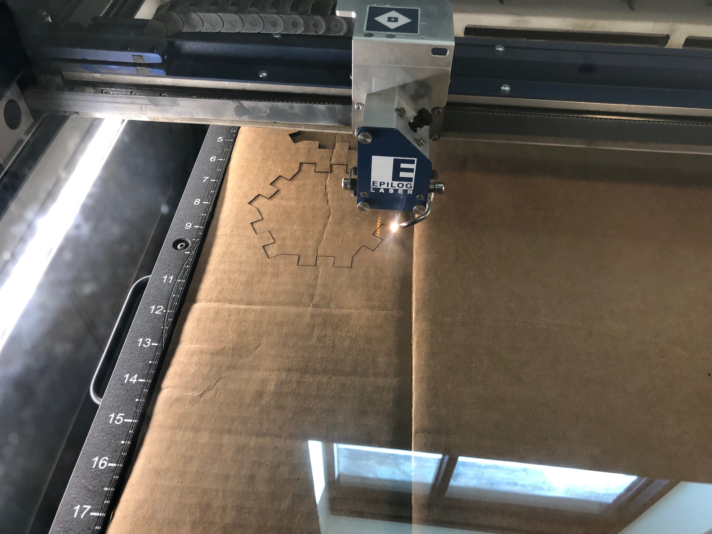

A press-fit kit made of icosahedral shapes- hexagons and pentagons with 3 "fit-points" on each side. The idea was to create a kit that allows people to create abstarct figures. The concept is inspired by shapes like the icosahedron and icosidodecahedron. Although there are 3 points of contact, only 2 are used to connect two pieces together. The extra point is meant to support addetional connections.
Experimented with Rhino and Illustrator. Key takeaway: 3D programs like Solidworks or Rhino are much better for designing 3D/geometric shapes, especially when mirrioring or transforming objects. Hindsight:The corner joints have to be slightly smaller and rounded for better fit.

A hexagonal dome? A basket? A collapsed icosahedral model?
All of the above!!! You can make normal shapes look weird with hexagons!!!
Random fit test: https://youtu.be/4J7Ovy1n4_M